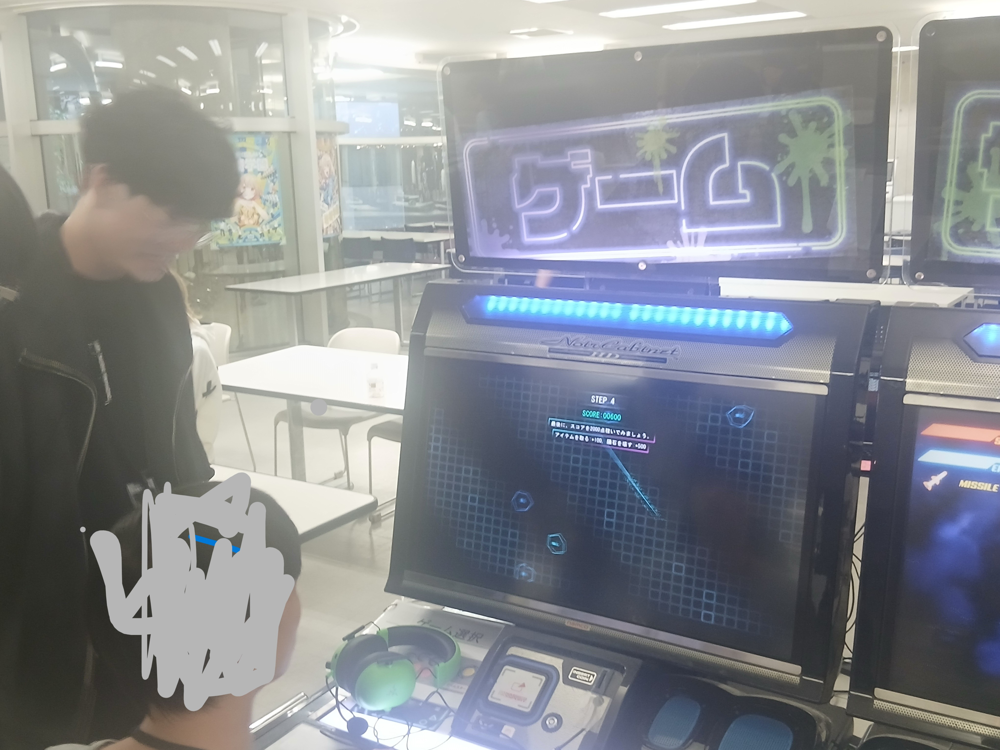
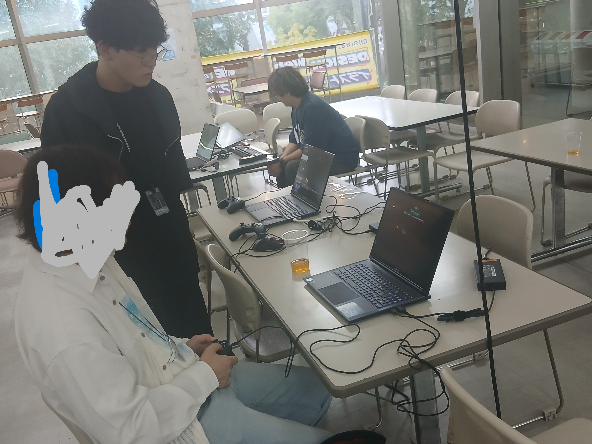
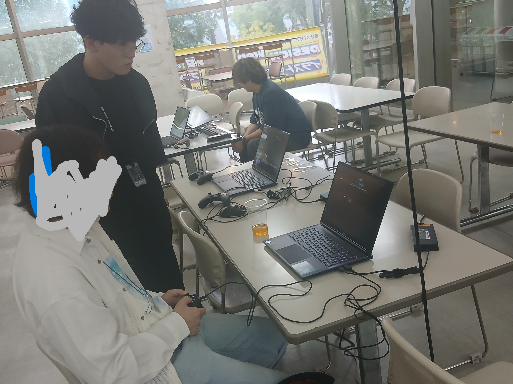
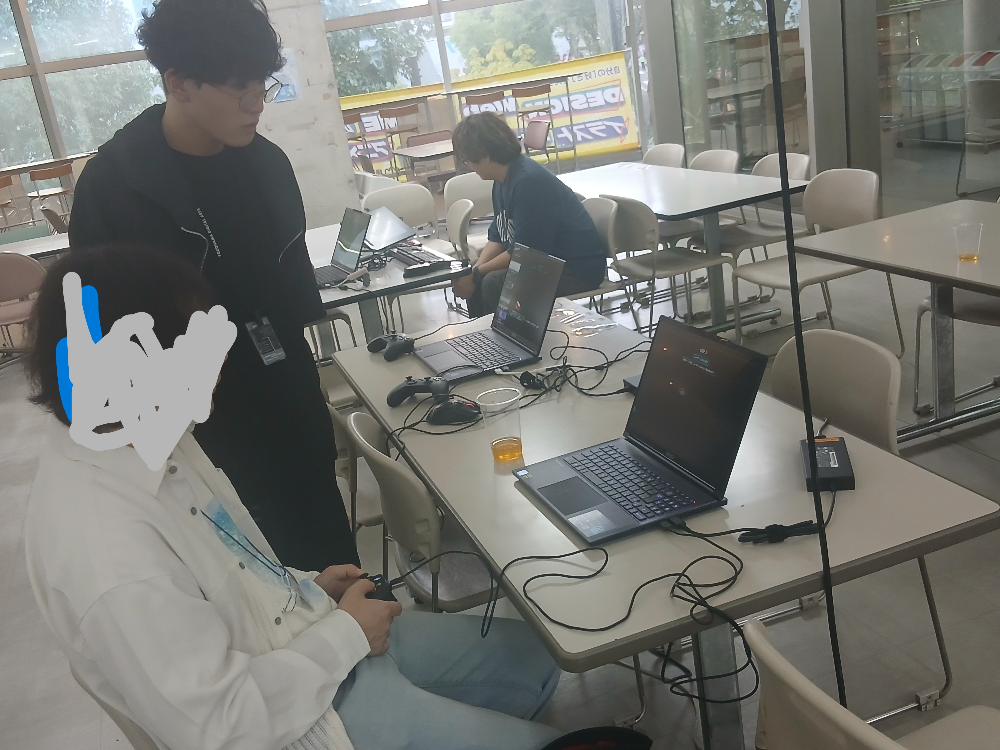
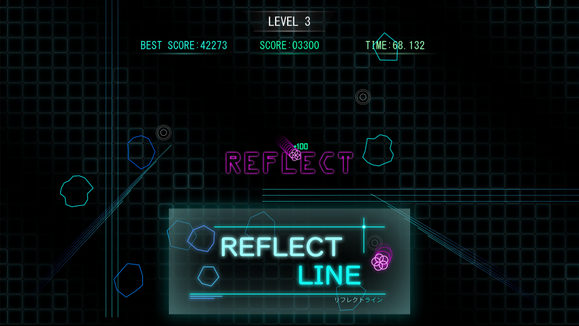

[ 人物紹介 ]


私は、ゲームに出会って仲間と協力することの大切さを知り、プレイヤーに単に楽しいや嬉しいと感じてもらうだけでなく、「このゲームを遊んだ時間は幸せだった」「あの時代はよかった」と思い出に残るような体験を届けたいと思うようになりました。
そのために、チームで協力してゲームを完成させることにやりがいを感じ、裏方として仲間が作業しやすい環境を整えつつ、プログラミングを通してゲームの挙動を思い通りに動かすことに力を入れています。
また、スキルや知識を広げるため、CEDECや東京ゲームショウ、キャリアクエストなどさまざまなイベントにも参加し、最新のゲーム業界や開発手法に触れるよう努めています。
さらに、品質面からも作品を支えたいと考え、デバッカーとしての役割にも強い関心を持っています。プレイヤーに安心して楽しんでもらえるよう、バグを見つけ出し改善に繋げることを通して、チームや作品全体の完成度を高めていきたいと考えています。
コードや仕組みでチームやプレイヤーに貢献することを意識し、チームでの一体感と安心感を大切にしながら、プレイヤーの人生に残るようなゲームを作れるプログラマー、そしてデバッカーを目指しています。
| 生年月日 | 2006年3月1日 |
|---|---|
| 学校 | 横浜デジタルアーツ専門学校 |
| 志望 | プログラマー |
| 趣味 | ゲーム/アニメ鑑賞/映画鑑賞/空手 |
| 好きなゲーム | Apex Legends / Battlefield5 / 鳴朝 / Cyberpunk 2077 / FINAL FANTASY シリーズ/MONSTERHUNTERシリーズ/グランド・セフト・オートⅥ/ワイルドハーツ/VALORANT |
| その他の活動 | ゲーム制作サークル / e-sportsサークル / コスプレサークル / 学生自治会 / 空手(10年) |
[ スキル・資格取得 ]
▶ スキル
開発言語
C#
C++
C
プログラム開発環境
Visual Studio
Visual Studio Code
Unity
DXlib
ツール
GitHub
Sourcetree
OS
Windows
Linux
業務効率化ツール
Slack
Discord
環境管理
Google フォーム
Google スプレッドシート
Google ドキュメント
▶ 資格取得
📅 令和6年12月
GGクリエイター検定
ベーシック
✓ 合格
📅 令和6年12月
情報処理活用能力検定
3級
✓ 合格
📅 令和7年8月
GGエンジニア検定
ベーシック
✓ 合格
[ イベント参加 ]
CEDEC 2024・2025
役割
ボランティアスタッフ
開催年
2024・2025
概要
ボランティアスタッフとして参加しセレクションの列を整備。※2025では個人で来場しました。
結果・学習点
ボランティアスタッフと参加し様々なセレクションを見ることや企業の人々の話を聞き勉強になりました。
東京ゲームショウ2024
役割
ボランティアスタッフ
開催年
2024
概要
ボランティアスタッフとして参加、列の整備と声掛け
結果・学習点
企業のブースをみて最新情報を取得したり、インディーズのブースを見学し個人のゲーム開発を見ることができました。
東京ゲームショウ2025
役割
ゲーム展示・ボランティアスタッフ
開催年
2025
概要
自分たちで作成したゲームの展示また学園の整備スタッフを担当
結果・学習点
ビジネスデイでは企業の方々にゲームを触っていただきフィードバックをしていただき参考になりました。一般デイでは一般の方に楽しんでもらいました。
新横浜Creators'Playground第2回
役割
ゲーム展示
開催年
2025
概要
インディーズ開発者がゲームを展示するイベントに学生枠で出店しました
結果・学習点
インディーズゲームを作成している方々から様々な意見を取り入れることができてとてもいい経験になりました。

 


[ ゲーム作品紹介 ]
REFLECT LINE
DXlib
C++
2D Action

レーザーや障害物を避ける2Dアクションゲーム！アイテムを取ると反射モードが発動し、受けたレーザーを跳ね返して隕石に追尾・破壊、スコアを稼いでハイスコア更新を目指すゲームです。
プラットフォーム:
Windows
制作環境:
DXlib
制作期間:
2025/4/21～
制作人数:
2人
アピールポイント
- DXlibで作成
- プレイヤー全体移動処理
- レーザー反射処理
- 波紋障害物の作成・使いやすいクラス設計
役割: 基盤システム・プレイヤー・アイテム・障害物システム（通常レーザー、直線レーザー、反射レーザー、波紋、花火）を担当